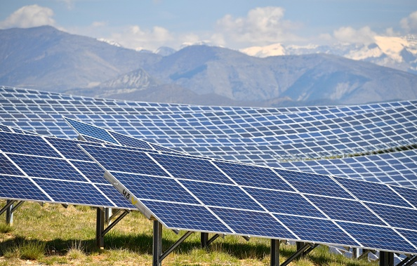

Przyszłość energii: Czysta i zrównoważona energia dla lepszego jutra
Energia słoneczna jest jednym z najbardziej powszechnych i czystych źródeł energii. Dzięki panelom słonecznym możliwe jest pozyskiwanie energii bezpośrednio z promieniowania słonecznego.
Energia wiatrowa wykorzystuje ruch powietrza do produkcji energii elektrycznej za pomocą turbin wiatrowych. Jest to jedno z najbardziej rozwiniętych źródeł odnawialnych.
Energia wodna pochodzi z przepływających wód, które mogą napędzać turbiny w elektrowniach wodnych. Jest to jedno z najstarszych źródeł energii odnawialnej.
Energia geotermalna wykorzystuje ciepło wnętrza ziemi do produkcji energii. Jest to stabilne źródło energii, które nie zależy od warunków atmosferycznych.
Energia biomasy pochodzi z materii organicznej, takiej jak drewno, odpady rolnicze i inne materiały biologiczne. Jest to odnawialne źródło energii, które może być wykorzystywane do produkcji ciepła, energii elektrycznej i paliw.
Energia oceaniczna wykorzystuje ruch wody w oceanach, taki jak fale, pływy i prądy, do produkcji energii. Jest to obiecujące źródło energii odnawialnej, które ma potencjał do dostarczania dużych ilości energii.